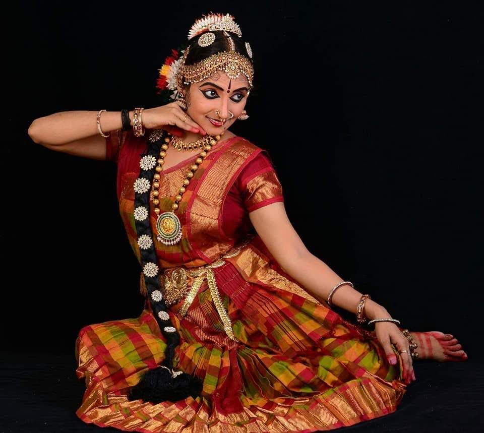
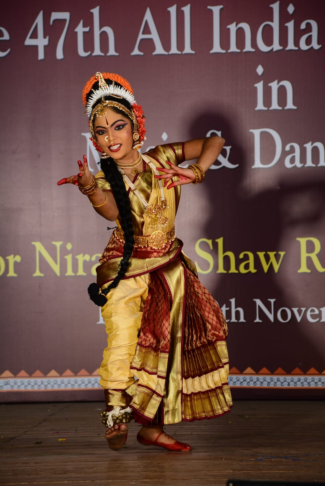
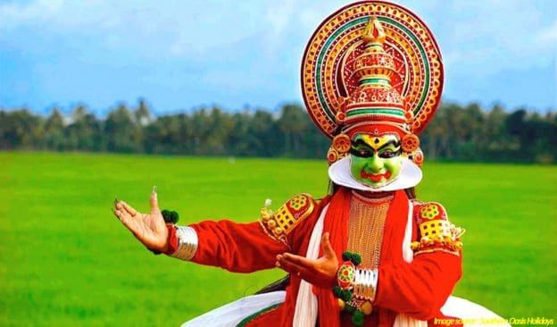

CLASSICAL HERITAGE
The Eight Classical Dances of India

Bharatanatyam
A graceful classical dance known for expressive gestures, rhythm and storytelling.
Explore Dance →
Kuchipudi
A vibrant classical dance blending graceful movements, drama and expressive storytelling.
Explore Dance →
Kathak
A storytelling dance recognised for rhythmic footwork, graceful movements and spins.
Explore Dance →
Odissi
One of India's oldest classical dance traditions, known for elegant poses and expressive movements.
Explore Dance →
Kathakali
A dramatic dance tradition famous for elaborate costumes, makeup and storytelling.
Explore Dance →
Mohiniyattam
A graceful classical dance known for gentle, flowing and expressive movements.
Explore Dance →
Manipuri
A devotional classical dance featuring graceful, delicate and flowing movements.
Explore Dance →
Sattriya
A classical dance tradition that originated in Assam and has deep cultural significance.
Explore Dance →